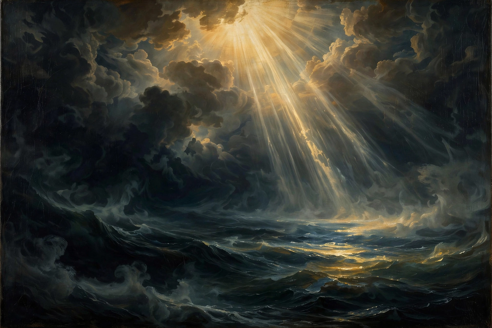

| Source | Genesis 1:1–2:3 and 2:4–2:25 |
|---|---|
| Accounts | Two: the seven-day account and the Garden of Eden account |
| Comparable texts | Enūma Eliš, Atrahasis |

The Genesis creation narrative is the creation myth of both Judaism and Christianity, told in the first two chapters of the Book of Genesis. It consists of two distinct stories: in the first (Genesis 1:1–2:3), God (Elohim) creates the world in six days and rests on the seventh; in the second (Genesis 2:4–25), God ( Yahweh) forms man from dust, plants the Garden of Eden, and creates woman from the man's rib.
In the seven-day account, creation proceeds by divine speech: light; the firmament separating the waters; dry land and vegetation; the sun, moon and stars; creatures of sea and sky; land animals and finally humankind, made "in our image, after our likeness", male and female together. Each day closes with the refrain "and there was evening and there was morning". On the seventh day God rests, blessing and sanctifying the Sabbath.
The second account is older in style and more anthropomorphic. The man (Adam) is placed in Eden to till and keep it, forbidden only the fruit of the tree of the knowledge of good and evil. Finding it "not good that the man should be alone", God forms the animals, then builds the woman (Eve) from the man's side.
Modern scholarship, following the documentary hypothesis, attributes the first account to the Priestly source (exilic or post-exilic, 6th–5th century BCE) and the second to the Yahwist (c. 10th–9th century BCE). The narrative shares motifs with Mesopotamian creation traditions such as the Enūma Eliš — the watery chaos (tehom, cognate with Tiamat) — but recasts them in a monotheistic framework in which the cosmos is ordered by a single God without combat or theogony.
See also: Atrahasis · Tiamat · Tower of Babel · Noah